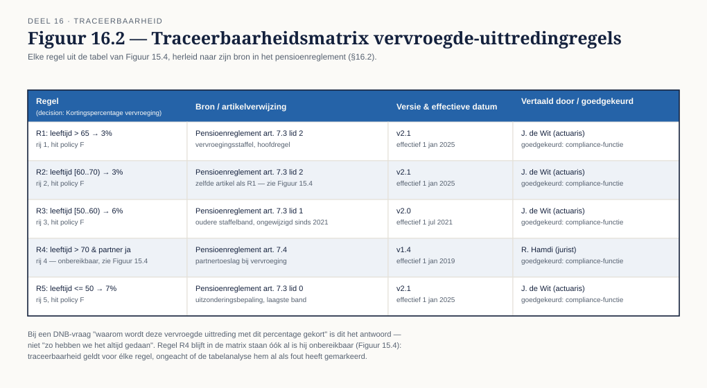
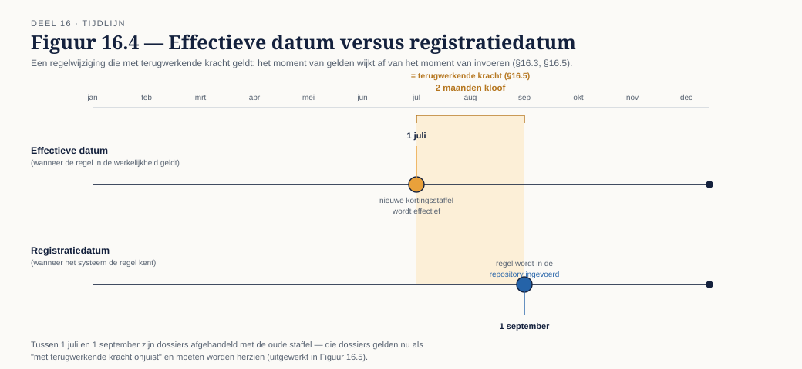

Deel 16 — Beslismanagement en regelbeheer
Reader · Ductus-cursus BPMN, CMMN & DMN · niveau 2 (praktijk) · deel 16 van 30 · studielast ± 6 uur
Dit materiaal bereidt voor op het examen OCEB 2 Business Intermediate van de Object Management Group en op het DMN-onderdeel van het BPM+ Certificate. Het is geen vervanging van het officiële examenmateriaal.
Leerdoelen
Na dit deel kun je:
- Business rules, beslissingen en beleid onderscheiden.
- Regels herleiden naar hun bron in wet- en regelgeving en die traceerbaarheid vastleggen.
- Een regelrepository inrichten: eigenaarschap, levenscyclus, versionering, effectieve datum.
- Een wijzigingsproces ontwerpen voor beslislogica.
- Omgaan met terugwerkende kracht in beslismodellen.
16.1 Regel, beslissing, beleid
Drie niveaus die in het dagelijks taalgebruik door elkaar worden gebruikt, maar die voor eigenaarschap een cruciaal verschil maken:
- Beleid — een intentie op organisatieniveau: "Meridiaan streeft naar een zorgvuldige, uniforme beoordeling van vervroegde uittreding." Niet zelf uitvoerbaar, wel de bron waaruit regels worden afgeleid.
- Beslissing — het DMN-concept uit niveau 1, deel 6: een decision met een DRD-positie, invoer en uitkomst.
- Regel — de individuele bouwsteen binnen een beslissing, meestal een rij in een beslistabel, of een enkele voorwaarde binnen een FEEL-expressie.
Waarom het onderscheid ertoe doet voor eigenaarschap. Beleid wordt vastgesteld door het management of een compliance-functie. Een beslissing (de DRD-structuur, welke inputs, welke decompositie) is een ontwerpkeuze van de modelleur, in overleg met de vakinhoudelijk verantwoordelijke. Een individuele regel binnen een tabel kan, met de juiste guardrails, door een vakspecialist zelf worden gewijzigd zonder de bredere decision-structuur aan te raken. Een organisatie die deze drie niveaus niet onderscheidt, laat óf de vakafdeling toe tot wijzigingen die eigenlijk architectuurbeslissingen zijn, óf blokkeert eenvoudige regelwijzigingen achter een zwaar wijzigingsproces dat daar niet voor bedoeld was.
16.2 Van wetgeving naar regel
De knowledge source uit een DRD (niveau 1, deel 6, §6.2) was tot nu toe een informatief element — een verwijzing zonder verdere functie. In dit deel wordt die verwijzing functioneel: elke regel moet herleidbaar zijn naar de bron die hem rechtvaardigt.
Traceerbaarheid aantonen aan een toezichthouder. Voor een pensioenuitvoerder onder DNB-toezicht is dit geen theoretische oefening. Wanneer een toezichthouder vraagt "waarom wordt deze vervroegde uittreding met dit percentage gekort", moet het antwoord herleidbaar zijn tot een concreet artikel in de pensioenregeling of relevante wetgeving — niet tot "zo hebben we het altijd gedaan" of, erger, tot een tabel waarvan niemand meer weet waar de percentages vandaan komen.
Een traceerbaarheidsmatrix. Per regel (of per groep regels die uit dezelfde bron komen): de regel zelf, de bron (artikel, beleidsdocument, of externe wetgeving met datum en versienummer), en — waar relevant — de naam van wie de vertaling van bron naar regel heeft gemaakt en goedgekeurd. Dit is geen bureaucratie om de bureaucratie: het is precies het bewijs dat een toezichthouder nodig heeft, en het is tegelijk het eerste waar je naar kijkt als een regel betwist wordt.
16.3 De regelrepository
Een verzameling beslistabellen wordt pas beheersbaar met een repository die meer bijhoudt dan alleen de huidige inhoud:
- Eigenaarschap per regel (of regelgroep) — wie is inhoudelijk verantwoordelijk, niet wie heeft hem laatst gewijzigd.
- Levenscyclus — concept, in review, vastgesteld, vervallen — parallel aan het statusmodel voor procesmodellen uit deel 21, maar toegepast op regels.
- Versionering — elke wijziging krijgt een eigen versie; de oude versie blijft raadpleegbaar, niet alleen voor archiefdoeleinden maar omdat een deelnemer wiens zaak jaren geleden speelde, recht heeft op de regel die toen gold.
- Effectieve datum versus registratiedatum — het moment waarop een regel geldt is niet noodzakelijk hetzelfde als het moment waarop hij wordt ingevoerd. Een regel kan op 1 maart worden ingevoerd met een effectieve datum van 1 januari — en precies dat verschil is de bron van het probleem in §16.5.
16.4 Het wijzigingsproces
Wie mag wijzigen, wie toetst, wie keurt goed. Een wijzigingsproces voor beslislogica kent doorgaans drie rollen: degene die de wijziging voorstelt (vaak een vakspecialist die een regelgevingswijziging signaleert), degene die de wijziging toetst op correctheid en volledigheid (een modelleur, met de tabelanalysetechnieken uit deel 15, §15.6), en degene die goedkeurt (de proceseigenaar of een compliance-functie, afhankelijk van de impact).
De spanning tussen wendbaarheid en beheersing. Een wijzigingsproces dat voor elke regelaanpassing een volledig releaseproces vergt, is te traag voor een organisatie die snel op regelgevingswijzigingen moet reageren. Een proces waarin iedereen zomaar een tabel kan aanpassen, is een compliance-risico. De oplossing ligt niet in het kiezen van één kant, maar in het onderscheid uit §16.1: eenvoudige regelwijzigingen binnen een bestaande, goedgekeurde decision-structuur (bijvoorbeeld: een percentage in een reeds bestaande kolom) kunnen een lichter proces doorlopen dan een wijziging die de structuur zelf raakt (een nieuwe inputkolom, een andere hit policy).
Guardrails voor zelfbediening. Wil je de vakafdeling toestaan zelf regels te wijzigen — een reële wens bij een organisatie die snel wil kunnen reageren — dan zijn expliciete guardrails nodig: welke kolommen mogen wel/niet gewijzigd worden, een verplichte toetsing op volledigheid en consistentie (geautomatiseerd waar mogelijk, deel 15, §15.6) vóórdat een wijziging live gaat, en een verplichte koppeling aan een traceerbare bron (§16.2) — geen wijziging zonder vermelding waarom.
16.5 Terugwerkende kracht
Het lastigste probleem van dit deel, en een van de lastigste van heel niveau 2: een regel wijzigt, met een effectieve datum die vóór de datum van invoering ligt.
Waarom dit gebeurt. Wetgeving wordt vaak met terugwerkende kracht ingevoerd — een percentage dat "geldt vanaf 1 juli" terwijl de wet pas in september wordt gepubliceerd. Een pensioenuitvoerder moet dan niet alleen nieuwe gevallen vanaf nu met de nieuwe regel berekenen, maar ook alle gevallen die tussen 1 juli en nu al zijn afgehandeld, herzien.
Wat dit voor het beslismodel betekent. Een decision die alleen "de huidige regel" kent, kan dit niet aan. Wat nodig is, is het vermogen om, voor een gegeven datum in het verleden, te weten welke regel op dát moment gold — niet welke regel nu geldt. Dit vraagt om bitemporaliteit: het bijhouden van zowel de effectieve datum (wanneer de regel gold in de werkelijkheid) als de registratiedatum (wanneer het systeem de regel kende). Een model dat alleen de huidige, "actieve" versie van een tabel bewaart, kan een herberekening over een periode in het verleden niet correct uitvoeren zonder handmatig terug te graven naar oude documentversies — als die al bewaard zijn.
De praktische consequentie. Dit is geen probleem dat je achteraf repareert; het is een ontwerpbeslissing die je vooraf moet nemen. Een regelrepository die vanaf het begin versies met effectieve datums bijhoudt (§16.3), kan een historische vraag beantwoorden. Een repository die alleen "de huidige stand" toont, kan dat niet, en de reparatie achteraf — reconstrueren welke regel wanneer gold uit oude documenten, e-mails en het geheugen van medewerkers — is precies het soort werk dat niemand wil doen onder tijdsdruk van een toezichthouder.
16.6 Testen bij regelwijziging
Direct voortbouwend op deel 15, §15.7: wanneer een regel wijzigt, is regressietesten niet optioneel. Twee aanvullende technieken zijn relevant bij regelwijziging specifiek:
Shadow runs. De nieuwe regelversie draait parallel aan de oude, op dezelfde binnenkomende gevallen, zonder dat de uitkomst van de nieuwe versie al bindend is. Vergelijk de uitkomsten: waar wijken ze af, en is dat de bedoelde wijziging? Dit is met name waardevol bij een wijziging met grote impact, waar een fout in productie kostbaar zou zijn.
Aantonen dat een wijziging alleen doet wat hij moet doen. De testset uit deel 15 gecombineerd met een shadow run levert het bewijs dat een wijziging exact het bedoelde effect heeft en geen onbedoelde neveneffecten — precies het soort bewijs dat, samen met de traceerbaarheidsmatrix uit §16.2, een verdedigbaar dossier vormt richting een toezichthouder of een interne auditor.
Kernbegrippen
Beleid / beslissing / regel — de drie niveaus met elk een ander soort eigenaarschap · Traceerbaarheid — de herleidbaarheid van een regel naar zijn bron · Traceerbaarheidsmatrix — het document dat deze herleidbaarheid vastlegt · Regelrepository — eigenaarschap, levenscyclus, versionering, effectieve datum · Effectieve datum versus registratiedatum — wanneer een regel geldt versus wanneer hij wordt ingevoerd · Guardrails voor zelfbediening — de grenzen waarbinnen een vakafdeling zelf mag wijzigen · Terugwerkende kracht / bitemporaliteit — het bijhouden van zowel geldigheid als registratie in de tijd · Shadow run — het parallel testen van een nieuwe regelversie tegen de oude
Examenrelevantie — OCEB 2 Business Intermediate en BPM+
Governance van bedrijfsregels is een expliciet onderdeel van OCEB 2 Business Intermediate; het DMN-onderdeel van BPM+ toetst met name de praktische toepassing van regelbeheer op een uitgewerkt beslismodel.
Leeswijzer
Geen apart hoofdstuk in de OMG-standaarden zelf; dit deel bouwt op de knowledge source uit de DMN-specificatie (niveau 1, deel 6) en op algemeen erkende praktijk in business rules management, zoals ook behandeld in de relevante OCEB 2 Business-track literatuur.
Figurenlijst



